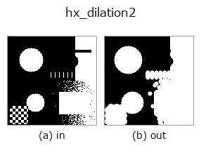

halcon_ext op• Data kinds: region → region
• Call: fullseye.apply(img, "hx_dilation2", a=0.5, b=0.5) (2-D model = एक image + दो scalar knobs a,b∈[0,1])
• HALCON समकक्ष: dilation2 (अर्थ और parameters समझने के लिए HALCON reference उपयोगी है)

*Figure synthetic 128×128 input पर सच में चलाकर मिला output है। बाईं ओर input, दाईं ओर output। Point clouds ऊपर से देखे गए scatter के रूप में (brightness = z), 1-D series line के रूप में, volumes z दिशा में maximum-intensity projection के रूप में, videos बीच के frame के रूप में, complex images amplitude के रूप में, और जो return values चित्र नहीं बन सकते वे स्वयं values के रूप में दिखाए जाते हैं।*
Knob a को बदलकर (0.1 / 0.5 / 0.9, दूसरा knob default पर):
▸ hx_dilation2: knob a को बदलने का figure (docs site)
Knob b को बदलकर (0.1 / 0.5 / 0.9, दूसरा knob default पर):
▸ hx_dilation2: knob b को बदलने का figure (docs site)
Stages (पहले आने वाले ops → यह op, बाएँ से क्रम में):
▸ hx_dilation2: stages का figure (docs site)
दूसरी images पर भी (synthetic scene / photo / coins। ऊपर की row में inputs, नीचे की row में उनके outputs। Knobs default पर):
▸ hx_dilation2: दूसरी images पर output (docs site)
Reference point वाला dilation: dilation के बाद reference point offset (b से translation)।
v > 0.5 को region मानकर, radius r के disc structuring element से binary_dilation करने के बाद, परिणाम को column दिशा में sh pixels np.roll से खिसकाकर 0/1 float array लौटाता है।
• a → disc radius r = 1 + int(a*4) (1 से 5 pixels)।
• b → column दिशा का shift sh = int((b-0.5)*6)। मान -3 से 3 हैं, और दशमलव भाग 0 की ओर काट दिया जाता है, इसलिए b
लगभग 1/3 से 2/3 की सीमा में हो तो 0 (कोई shift नहीं) होता है। ऋणात्मक पर बाएँ, धनात्मक पर दाएँ।
row दिशा में shift नहीं है (केवल reference point को horizontal रूप से खिसकाने वाला रूप दोहराया गया है)। np.roll के कारण किनारे से बाहर निकला भाग विपरीत ओर प्रकट होता है (किनारे को छूने वाले region संभालते समय ध्यान रखें)। केवल साधारण dilation के लिए hx_dilation1।
• gallery2d_halcon_ext family guide
• Sample data catalog (DL URL / license) — 2-D के लिए skimage.data (BSD/public) + synthetic, 3-D के लिए real data sources (Stanford/PDS आदि) के DL URL।
• Operators का स्रोत और संदर्भ — इस op family के मूल research/methods के स्रोत।
• Algorithm का मानक स्रोत (लेखक, वर्ष) और उपयोग ऊपर की family usage guide में दिए गए हैं।
नीचे का program सच में चलता है, यह जाँचा गया है (figure वाला ही input)। Studio की help में यह block buttons बन जाता है, जिनसे इसे वहीं load करके चलाया जा सकता है।
threshold 0.50 0.50 hx_dilation2 0.50 0.50
▸ यह pipeline load करें · Load करके चलाएँ
• gallery2d_halcon_ext — py -3.11 examples/gallery2d_halcon_ext.py
region को input के रूप में लेते हैं)identity · reg_erode · reg_dilate · reg_open · reg_close · fill_holes · select_largest · remove_small
halcon_ext)hx_gen_circle · hx_gen_ellipse · hx_gen_rectangle2 · hx_gen_checker_region · hx_gen_grid_region · hx_gabor · hx_fit_surface1 · hx_fit_surface2
*Provenance: ops.py — 2D operator registry. यह per-op note tools/opdocs.py md से अपने-आप generate होता है (हाथ से edit न करें)।*
© 2026 Kazufumi Furuse — Fullseye operator documentation. Licensed under Apache-2.0.